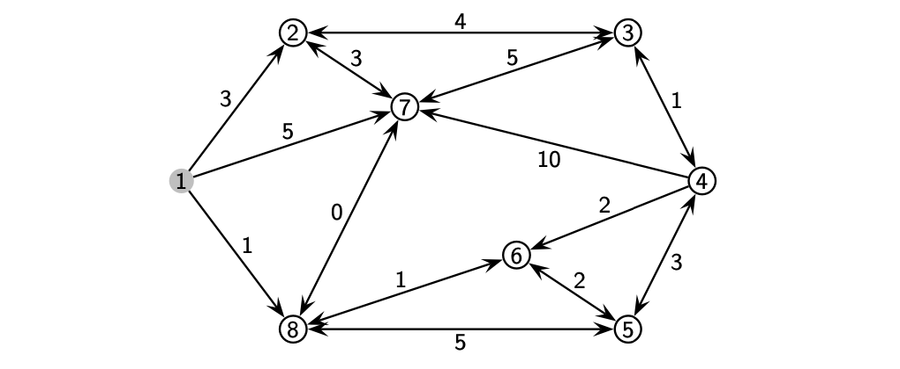
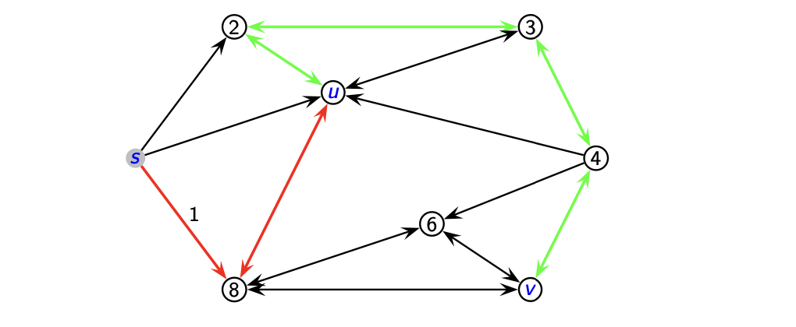
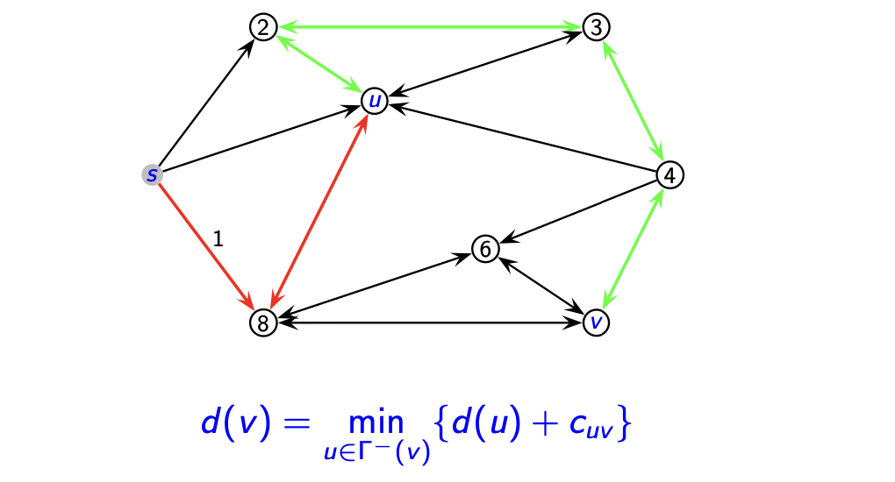
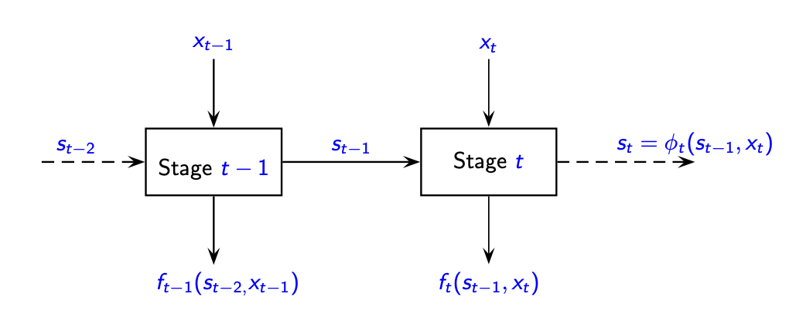
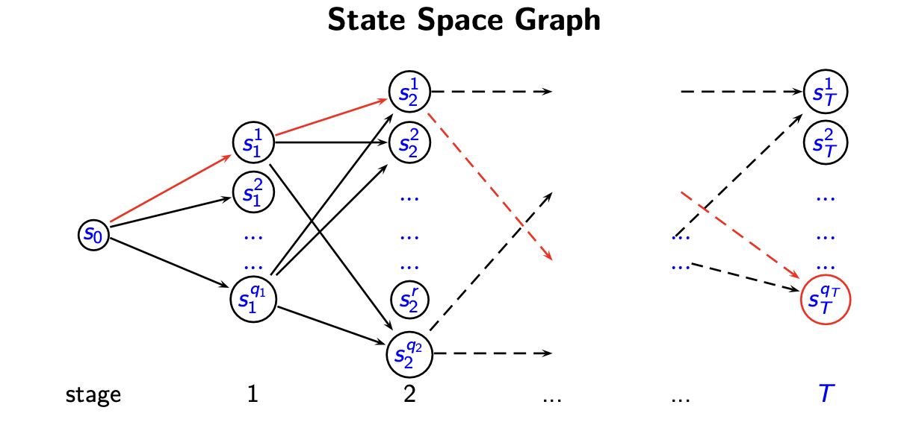
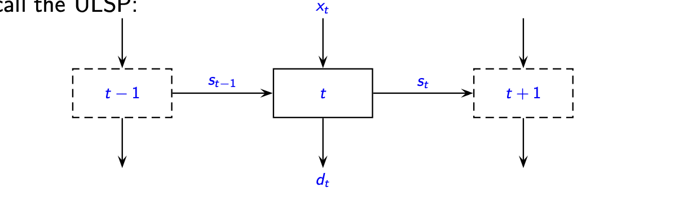
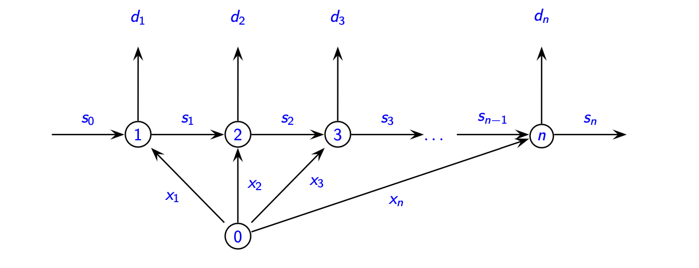
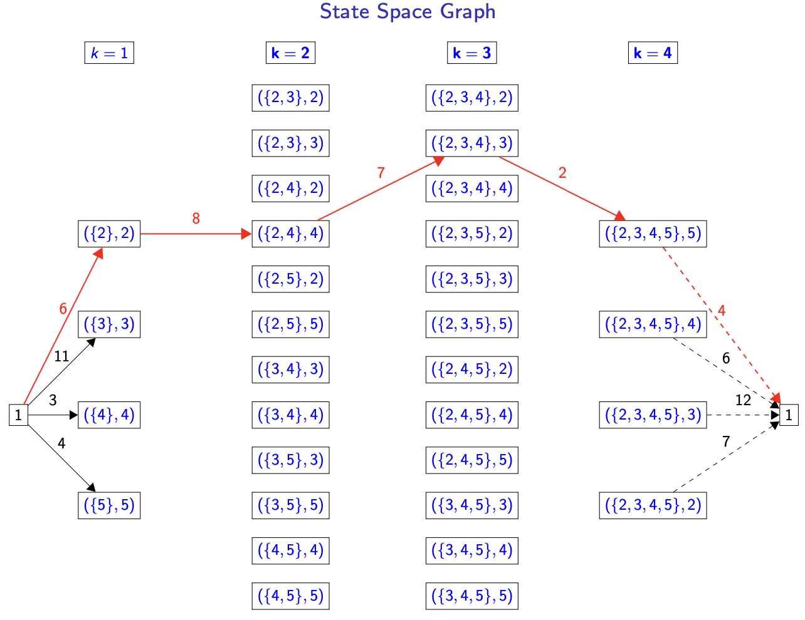
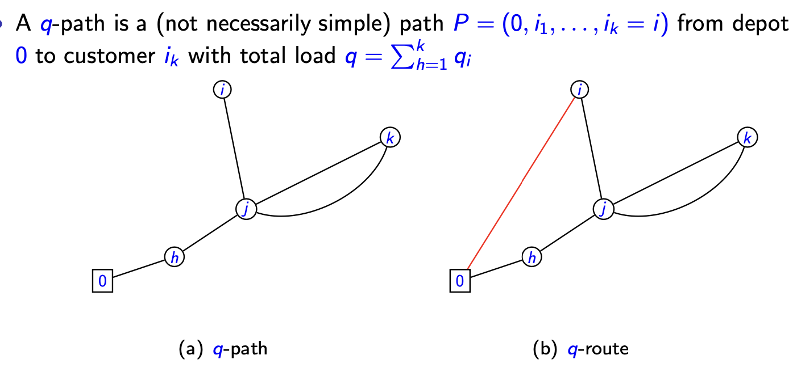

离散优化 Ch_09: 动态规划¶
本章概要
系统讲解动态规划 (DP) 的核心理论与算法实现：从 Bellman 最优性原理出发，通过最短路径、背包问题、批量问题、TSP 及车辆路径问题等经典案例，深入剖析 DP 建模框架、递归方程设计与复杂度分析，掌握隐式枚举求解整数优化问题的通用方法。
1. Introduction (引言)¶
1.1 Dynamic Programming Overview (动态规划概述)¶
核心思想
动态规划是由 Richard Bellman 的开创性工作引入的。与分支定界（Branch and bound）类似，DP 是一种精确枚举技术，试图避免枚举大量的可行整数解。DP 使用隐式枚举（implicit enumeration）来求解整数优化问题。
"Dynamic programming (DP) was introduced by the pioneer work of Richard Bellman... DP is another enumerative technique, that uses implicit enumeration to solve integer optimization problems."
分解框架
DP 提供了一个将某些优化问题分解为嵌套子问题族（nested family of subproblems）的框架。这种嵌套结构建议了一种递归方法（recursive approach），通过子问题的解来求解原问题。
"DP provides a framework for decomposing certain optimization problems into a nested family of subproblems. This nested structure suggests a recursive approach for solving the original problem from the solutions of the subproblems."
1.2 The Shortest Path Problem (SPP) - 最短路径问题¶
问题定义¶
给定有向图 \(G = (V, A)\)，其中 \(n = |V|\)，\(m = |A|\)，弧长 \(c: A \to \mathbb{R}_+\)。目标是计算从源点 \(s\) 到所有其他顶点 \(v \in V \setminus \{s\}\) 的最短路径。

Bellman 最优性原理 (Bellman Principle of Optimality)¶
关键观察
如果从 \(s\) 到 \(v\) 的最短路径经过节点 \(u\)，则子路径 \(P_{su}\) 和 \(P_{uv}\) 必须分别是最短的 \((s,u)\)-路径和 \((u,v)\)-路径。
原理表述
任何最短路径的子路径（任何部分解）本身必须是最短路径（子问题的最优解）。
"any subpath (any partial solution) of a shortest path (of an optimal solution) must be a shortest path (an optimal solution of a subproblem) itself"

递归方程 (Recurrence)¶
基于最优性原理，得到最短路径距离的递推关系：
其中 \(\Gamma^{-}(v)\) 表示 \(v\) 的前驱节点集合。

有向无环图 (DAG) 的特殊情况¶
定义 1 (有向无环图)
不包含任何有向环的图。
定义 2 (拓扑排序)
双射 \(f: V \to \{1, \ldots, n\}\) 称为图 \(G\) 的拓扑排序，如果对所有 \((u,v) \in A\) 都有 \(f(u) < f(v)\)。
命题 1
\(G\) 有拓扑排序当且仅当 \(G\) 是无环的。若 \(G\) 无环，拓扑排序可在线性时间 \(O(n+m)\) 内计算。
若 \(G\) 是 DAG 且顶点已按拓扑排序编号（\(s=1\)），则：
其中 \(d(s) = 0\)。该算法时间复杂度为 \(O(m)\)。
一般图的处理（带弧数限制的最短路径）¶
对于任意有向图，引入阶段（stage）概念。设 \(z_k(v)\) 为从 \(s\) 到 \(v\) 最多使用 \(k\) 条弧的最短路径长度：
初始条件：\(z_0(s) = 0\)，\(z_0(v) = \infty\)（对所有 \(v \in V \setminus \{s\}\)）。
- 最终解：\(d(v) = z_{n-1}(v)\)
- 时间复杂度：\(O(nm)\)
1.3 The Knapsack Problem (KP) - 背包问题¶
问题定义¶
假设系数 \(\{w_j\}\) 和 \(c\) 为非负整数。
最优子结构观察 (Observation 1)
若 \(x^* = (x_1^*, \ldots, x_n^*)\) 是 KP 的最优解，则 \((x_1^*, \ldots, x_k^*)\)（\(k \leq n\)）是以下子问题的最优解：
其中 \(q = \sum_{j=1}^{k} w_j x_j^*\)。
DP 递归方程¶
考虑子问题族 \(\{KP_k(q): 1 \leq k \leq n, 0 \leq q \leq c\}\)。原问题 \(KP = KP_n(c)\)。
对于给定 \(k \leq n\) 和 \(q \leq c\)，设 \((x_1^*, \ldots, x_k^*)\) 是 \(KP_k(q)\) 的最优解，分两种情况：
- 若 \(x_k^* = 0\): 则 \(z_k(q) = z_{k-1}(q)\)
- 若 \(x_k^* = 1\): 则 \(z_k(q) = z_{k-1}(q - w_k) + p_k\)
因此得到完整递归：
- 初始条件：\(z_0(q) = 0\)（对所有 \(q = 0,1,\ldots,c\)）
- 时间复杂度：\(O(cn)\)（伪多项式时间 - pseudo-polynomial）
DP 算法伪代码¶
示例表格 (Example Table)¶
参数：\(p = (10, 5, 8, 6)\)，\(w = (2, 3, 4, 3)\)，\(c = 8\)
| q | 0 | 1 | 2 | 3 | 4 | 5 | 6 | 7 | 8 |
|---|---|---|---|---|---|---|---|---|---|
| \(z_0\) | \(0^*\) | 0 | 0 | 0 | 0 | 0 | 0 | 0 | 0 |
| \(z_1\) | 0 | 0 | \(10^*\) | 10 | 10 | 10 | 10 | 10 | 10 |
| \(z_2\) | 0 | 0 | 10 | 10 | 10 | \(15^*\) | 15 | 15 | 15 |
| \(z_3\) | 0 | 0 | 10 | 10 | 10 | \(15^*\) | 18 | 18 | 18 |
| \(z_4\) | 0 | 0 | 10 | 10 | 10 | 16 | 18 | 18 | \(21^*\) |
带 * 号标记最优解变化点。
状态支配 (Dominance) - 优化技术
定义 3 (支配): 状态 \(s_1 = (k, q')\) 支配状态 \(s_2 = (k, q'')\) 如果 \(z_k(q') \geq z_k(q'')\) 且 \(q' < q''\)。
- 若 \(s_1\) 支配 \(s_2\)，则 \(s_2\) 可被消除，因为从 \(s_2\) 获得的任何解都可从 \(s_1\) 获得。
- 通过仅生成非支配状态，可显著降低计算复杂度。
"Dominance rules play a very important role in any DP implementation"
2. The General Setting (一般设置)¶
2.1 序列决策过程 (Sequential Decision Process)¶
- 阶段 (Stages): 离散阶段序列决策过程，共 \(T\) 个阶段，\(t = 1, \ldots, T\)。
- 状态 (State): 阶段 \(t\) 开始时，过程处于状态 \(s_{t-1}\)，依赖于： a) 初始给定状态 \(s_0\) b) 决策变量 \(x_1, \ldots, x_{t-1}\)

转移函数: 阶段 \(t\) 的状态仅依赖于 \(s_{t-1}\) 和 \(x_t\)：
目标函数: 阶段 \(t\) 对目标函数的贡献仅依赖于 \(s_{t-1}\) 和 \(x_t\)。
形式化描述¶
2.2 后向归纳 (Backward Induction)¶
对于 \(h = T, T-1, \ldots, 1\)，定义值函数：
\(z_h(s_{h-1})\) 表示在给定状态 \(s_{h-1}\) 下，后续决策（\(k=h,\ldots,T\)）的最优值。原问题最优值 \(z = z_1(s_0)\)。
命题 2
- 边界条件：\(z_{T+1}(s_T) = 0\)
- 该递归将原问题转化为 \(T\) 个子问题序列，每个子问题只有一个决策变量。
2.3 前向归纳 (Forward Induction)¶
对于 \(h = 1, \ldots, T\)：
- 初始条件：\(\overline{z}_0(s_0) = 0\)
- \(\overline{z}_h(s_h)\) 表示在给定状态 \(s_h\) 下，先前决策（\(k=1,\ldots,h\)）的最优值。
2.4 DP 术语总结 (DP Terminology)¶
| 术语 | 说明 |
|---|---|
| 阶段 (Stage) | 原问题分解为 \(T\) 个阶段序列，每个阶段关联一个决策 |
| 状态 (State) | 阶段 \(t\) 计算的问题实例，有限个状态 \((s_t^1, \ldots, s_t^{q_t})\) |
| 递归函数 (Recursive Function) | \(z_t(s_t^i)\) 给出前 \(t\) 个决策且结果为状态 \(s_t^i\) 的子问题的最优值 |
| 最优性原理 (Principle of Optimality) | 计算 \(z_t(s_t^i)\) 仅依赖于阶段 \(t-1\) 的状态和函数 |
2.5 状态空间图 (State-Space Graph)¶
DP 的状态集通常用有向、无环、分层图 (directed, acyclic and layered graph) 表示：
- 节点: 状态
- 弧: 状态转移
- 路径: （子）问题
- 标签: 与状态关联的值

求解 DP 问题等价于在状态空间图上定义合适的问题并搜索最优路径。
2.6 SPP 和 KP 的 DP 建模对比¶
| 特征 | 最短路径问题 (SRPP) | 背包问题 (KP) |
|---|---|---|
| 阶段 | 路径长度或基数 \(k\)，\(k=1,\ldots,n-1\) | 物品 \(1,\ldots,k\)，\(k=1,\ldots,n\) |
| 状态 | \((v,k)\)，\(v \in V\)，从 \(s\) 到 \(v\) 最多用 \(k\) 条弧的最短路径 | \((q,k)\)，\(0 \leq q \leq c\)，从前 \(k\) 个物品中选取，背包容量为 \(q\) |
| 函数 | \(z_k(v)\)：从 \(s\) 到 \(v\) 最多用 \(k\) 条弧的最短路径长度 | \(z_k(q)\)：从前 \(k\) 个物品中选取，容量为 \(q\) 时的最大利润 |
| 递归 | \(z_k(v) = \min\{z_{k-1}(v), \min_{u \in \Gamma^{-}(v)}\{z_{k-1}(u)+c_{uv}\}\}\) | \(z_k(q) = \max\{z_{k-1}(q), z_{k-1}(q-w_k)+p_k\}\)（若 \(q \geq w_k\)） |
| 初始化 | \(z_0(s)=0\)，\(z_0(v)=\infty\)（\(v \neq s\)） | \(z_0(q)=0\)（\(q=0,\ldots,c\)） |
3. Additional Examples (额外示例)¶
3.1 无容量限制批量问题 (Uncapacitated Lot-Sizing Problem, ULSP)¶
问题回顾¶
其中 \(M\) 是很大的数。

基本性质¶
- 可假设 \(s_0 = 0\)，\(s_n = 0\)（无初始和期末库存）
- 令 \(d_{it} = \sum_{j=i}^{t} d_j\)。由于 \(s_t = \sum_{i=1}^{t} x_i - \sum_{i=1}^{t} d_i\)，目标函数可重写为：
其中 \(c_t = p_t + \sum_{i=t}^{n} h_i\)（单位生产成本 + 持有成本）。
- 常数项 \(-\sum_{t=1}^{n} h_t d_{1t}\) 可从目标中移除。
DP 递归（版本 1：基于库存状态）¶
- 阶段: 周期 \(t\)，\(t=1,\ldots,n\)
- 状态: \(s_t\)，周期 \(t\) 末的库存
- 决策: 生产量 \(x_t\)
- 值函数 \(z_t(s)\)：周期 \(1,\ldots,t\) 且周期 \(t\) 末库存为 \(s\) 的最小成本
前向递归：
- 计算范围：\(t=1,\ldots,n\)，\(s=0,\ldots,D\)（\(D=\sum_{i=1}^n d_i\)）
- 初始化：\(z_0(0)=0\)，\(z_0(s)=\infty\)（\(s=1,\ldots,D\)）
- 最优值：\(z_n(0)\)（假设期末库存为 0）
- 复杂度: \(O(nD)\)（伪多项式）
DP 递归（版本 2：基于最后生产周期 - 多项式时间）¶
最优解性质
- 零库存性质: \(s_{t-1}x_t = 0\)（若生产，则前期库存必为 0）
- 若 \(x_t > 0\)，则 \(x_t = \sum_{i=t}^{t+k} d_i\)（批量覆盖连续需求）
令 \(H(k)\) 为周期 \(1,\ldots,k\) 的最小成本。若 \(t \leq k\) 是最后生产周期，则 \(x_t = \sum_{i=t}^{k} d_i\)，成本为：
前向递归：
- 初始化：\(H(0) = 0\)
- 最优值：\(H(n)\)
- 复杂度: \(O(n^2)\)（多项式时间！）
示例计算¶
参数：\(n=4\)，\(d=(2,4,5,1)\)，\(p=(3,3,3,3)\)，\(h=(1,2,1,1)\)，\(f=(12,20,16,8)\)
- 计算得 \(c=(8,7,5,4)\)
计算过程：
- \(H(1) = H(0) + f_1 + c_1 d_{11} = 0 + 12 + 8 \times 2 = 28\)
- \(H(2) = \min\{H(0)+f_1+c_1 d_{12}, H(1)+f_2+c_2 d_{22}\} = \min\{12+48, 28+20+28\} = 60\)
- \(H(3) = \min\{100, 111, 101\} = 100\)
- \(H(4) = \min\{108, 118, 106, 112\} = 106\)
注: 讲义中计算结果为 100，但按给定数据应为 106，可能存在笔误。
最优解：\(y=(1,0,1,0)\)，\(x=(6,0,6,0)\)
网络流视角¶
ULSP 也可视为固定费用网络流问题 (fixed charge network flow problem)
需要选择开启哪些弧 \((0,t)\)（生产周期）。

3.2 旅行商问题 (Traveling Salesman Problem, TSP)¶
考虑非对称 TSP (Asymmetric TSP)：
- 给定有向图 \(G=(X_1, A)\)，弧成本 \(c_{ij}\)
- 目标：从节点 \(x_1\) 出发，访问 \(X_1 \setminus \{x_1\}\) 中每个节点恰好一次，返回 \(x_1\) 的最小成本环游
设 \(n=|X|\)，\(X = X_1 \setminus \{x_1\}\)。
前向递归 (Forward Recursion)¶
设 \(S \subseteq X\) 是包含 \(k\) 个元素的子集，\(x_i \in S\)。
定义 \(f(S, x_i)\) 为从 \(x_1\) 出发，访问 \(S\) 中所有节点，最终到达 \(x_i\) 的最短距离。
递归关系：
- 基础（\(k=1\)）：\(f(\{x_i\}, x_i) = c_{1i}\)（对所有 \(x_i\)）
- 归纳（\(k>1\)）：\(f(S, x_i) = \min_{x_j \in S \setminus \{x_i\}} \{f(S \setminus \{x_i\}, x_j) + c_{ji}\}\)
最优环游成本：
最优解重构：
对于任意 \(p\)（\(2 \leq k \leq n-1\)），若 \((x_1, x_{i_2}, \ldots, x_{i_n}, x_1)\) 是最优环游，则：
通过回溯可得到最优节点序列。

复杂度分析¶
- 时间复杂度: \(O(n^2 2^n)\)（指数级，但优于枚举的 \(O(n!)\)）
- 状态数: 阶段 \(k\) 有 \(\binom{n-1}{k} \cdot k\) 个状态
标签设定 vs 标签校正 (Label Setting vs Label Correcting)¶
标签设定算法 (Label Setting)
为状态计算的标签或值在算法结束前保持不变。前述 TSP 实现属于此类。
标签校正算法 (Label Correcting)
不保证标签值在算法结束前不变，可能需要更新。
标签校正实现步骤：
- 初始化 \(\mathcal{S}_1 = \{(\{x_1\}, x_1)\}\)，\(f(\{x_1\}, x_1) = 0\)，\(p(\{x_1\}, x_1) = \emptyset\)；\(\mathcal{S}_r = \emptyset\)（\(r=2,\ldots,n\)）；\(k=2\)。
- 扩展状态：对 \(\mathcal{S}_{k-1}\) 中每个状态 \((S, x_i)\) 执行步骤 3。
- 生成新状态：对每个 \(x_j \in \{x_h : (x_i, x_h) \in A\}\)，考虑状态 \((S', x_j)\)，其中 \(S' = S \cup \{x_j\}\)，成本 \(h = f(S, x_i) + c_{ij}\)。
- 若 \((S', x_j) \notin \mathcal{S}_k\)：加入 \(\mathcal{S}_k\)，设 \(f(S', x_j) = h\)，\(p(S', x_j) = (S, x_i)\)。
- 若 \((S', x_j) \in \mathcal{S}_k\) 且 \(f(S', x_j) > h\)：更新 \(f(S', x_j) = h\)，\(p(S', x_j) = (S, x_i)\)。
- \(k = k+1\)，若 \(k \leq n\) 返回步骤 2。
- 最优成本 \(z^* = \min_{(X, x_j) \in \mathcal{S}_n} \{f(X, x_j) + c_{j1}\}\)。
示例：5 节点非对称 TSP¶
成本矩阵：
- 阶段 k=1：\(f(\{2\},2)=6,\ f(\{3\},3)=11,\ f(\{4\},4)=3,\ f(\{5\},5)=4\)
- 阶段 k=2：\(f(\{2,3\},2)=16,\ f(\{2,4\},4)=14,\ f(\{4,5\},5)=8\)
- 阶段 k=3：\(f(\{2,3,4\},2)=15,\ f(\{3,4,5\},5)=12\)
- 阶段 k=4：\(f(\{2,3,4,5\},5)=23\)
最优环游成本：\(z^* = 23+4=27\)
最优环游：\(1 \to 2 \to 4 \to 3 \to 5 \to 1\)
3.3 带容量限制车辆路径问题 (Capacitated Vehicle Routing Problem, CVRP)¶
集合划分模型回顾¶
- 通过列生成（Column Generation）求解 LP 松弛。
- 定价问题 (Pricing Problem)：带资源约束的基本最短路径问题 (ESPPRC - Elementary Shortest Path Problem with Resource Constraints)，这是 \(\mathcal{NP}\)-hard 问题。
路径松弛 (Route Relaxations)¶
若将路线集 \(\mathcal{R}\) 扩大为 \(\hat{\mathcal{R}} \supset \mathcal{R}\)，允许非基本路径 (non-elementary routes)（车辆可多次访问客户），则：
- 系数 \(a_{i\ell}\) 变为客户 \(i\) 被路径 \(\ell\) 访问的次数。
- 划分约束确保整数解中不会选择非基本路径（因为需要恰好覆盖一次）。
- LP 松弛仍为 CVRP 的有效松弛。
- 定价问题变为带资源约束的最短路径问题 (SPPRC - Shortest Path Problem with Resource Constraints)，可在伪多项式时间内求解。
\(q\)-路径与 \(q\)-路线 (\(q\)-path and \(q\)-route)¶

\(q\)-路径
从仓库 0 到客户 \(i_k\) 的路径 \(P=(0, i_1, \ldots, i_k=i)\)，总载重 \(q = \sum_{h=1}^k q_i\)（不一定是简单路径）。
\(q\)-路线
\(q\)-路径加上边 \(\{0,i\}\) 形成的闭合回路。
计算 \(q\)-路径的 DP 方法¶
给定修正成本 \([\bar{d}_{ij}]\)，状态空间 \(\mathcal{X} = \{(q,i) : i \in V, q_i \leq q \leq Q\}\)。
定义 \(f(q,i)\) 为以非基本路径结束于客户 \(i\) 且交付 \(q\) 单位产品的最小成本路径成本。
递归：
- 计算范围：\(i \in V_c\)，\(q_i \leq q \leq Q\)
- 初始化：\(f(0,0)=0\)，\(f(0,i)=\infty\)（\(i \in V\)），\(f(q,i)=\infty\)（\(q=1,\ldots,Q\)）
寻找最负 \(q\)-路线：
- 使用修正成本 \(\bar{d}\) 计算 \(f(\cdot)\)
- 计算 \(\delta(i) = \min_{q_i \leq q \leq Q} \{f(q,i) + \bar{d}_{0i}\}\)，记录对应 \(q\) 值 \(\bar{q}_i\)
- 找到 \(i^* = \arg\min_{i \in V_c} \{\delta(i)\}\)
最负 \(q\)-路线成本为 \(f(\bar{q}_{i^*}, i^*) + \bar{d}_{0i^*}\)。
无三元环的 \(q\)-路径 (No 3-loops)¶
通过限制不包含连续三个节点形成的环来强化松弛。
定义：
- \(f(q,i)\)：结束于客户 \(i\)、载重 \(q\)、无环的最小成本路径成本。
- \(\pi(q,i)\)：对应 \(f(q,i)\) 路径中 \(i\) 的前驱节点。
- \(g(q,i)\)：结束于 \(i\)、载重 \(q\)、且前驱节点 \(\gamma(q,i) \neq \pi(q,i)\) 的最小成本路径成本。
初始化：
- 当 \(q \neq q_i\) 时：\(f(q,i) = g(q,i) = \infty\)
- 当 \(q = q_i\) 时：\(f(q,i) = \bar{d}_{0i}\)，\(\pi(q,i) = 0\)，\(g(q,i) = \infty\)
计算：
对于给定 \(q\)，设 \(h(j,i)\) 为从 0 到 \(i\) 且 \(j\) 刚好在 \(i\) 之前、无环的最小成本路径：
然后：
初始化：
- \(f(q,i) = g(q,i) = \infty\)（当 \(q \neq q_i\)）
- \(f(q,i) = \bar{d}_{0i}\)，\(\pi(q,i) = 0\)，\(g(q,i) = \infty\)（当 \(q = q_i\)）
复杂度: \(O(n^2 Q)\)（伪多项式时间）。
4. Notes and References (注释与参考文献)¶
关键贡献与文献¶
| 主题 | 参考文献 |
|---|---|
| 动态规划基础与最优性原理 | Bellman [1]: Dynamic Programming (1957) - Richard Bellman 开创了 DP 理论并首次提出"动态规划"和"最优性原理"术语 |
| DP 计算工具与离散优化 | Lew and Mauch [5]: Dynamic Programming: A Computational Tool (2010) |
| 无容量限制批量问题 | Pochet and Wolsey [7, chap. 7]: Production Planning by Mixed Integer Programming (2006) |
| 背包问题高效实现 | Martello and Toth [6]: Knapsack Problems: Algorithms and Computer Implementations (1990) Kellerer et al. [4]: Knapsack problems (2004) |
| 带资源约束的最短路径问题分类 | Irnich and Desaulniers [3]: Shortest path problems with resource constraints (2005) |
| CVRP 的 \(q\)-route 松弛 | Christofides et al. [2]: Exact algorithms for the vehicle routing problem based on spanning tree and shortest path relaxation (1981) |
参考文献列表¶
[1] Bellman, R., 1957: Dynamic Programming. Princeton University Press, Princeton, NJ, USA, 1 edition.
[2] Christofides, N., A. Mingozzi, and P. Toth, 1981: Exact algorithms for the vehicle routing problem based on spanning tree and shortest path relaxation. Mathematical Programming, 10, 255–280.
[3] Irnich, S. and G. Desaulniers, 2005: Shortest path problems with resource constraints. In Column Generation, Desaulniers, G., Desrosiers, J., and Solomon, M., editors. Springer US, 33-65.
[4] Kellerer, H., U. Pferschy, and D. Pisinger, 2004: Knapsack problems. Springer, I-XX, 1-546.
[5] Lew, A. and H. Mauch, 2010: Dynamic Programming: A Computational Tool. Studies in Computational Intelligence. Springer.
[6] Martello, S. and P. Toth, 1990: Knapsack Problems: Algorithms and Computer Implementations. Wiley, New York.
[7] Pochet, Y. and L. A. Wolsey, 2006: Production Planning by Mixed Integer Programming (Springer Series in Operations Research and Financial Engineering). Springer-Verlag New York, Inc.
注: 所有公式均按原讲义准确提取。对于 ULSP 的示例计算（第 30 页），原讲义中 \(H(4)\) 的计算结果与按给定参数的数学计算可能存在出入，建议以算法逻辑为准而非具体数值。